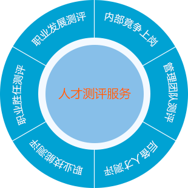
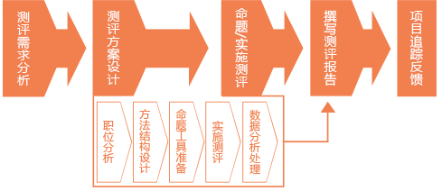

我们的服务
- 将一系列的评价中心工具如结构化面谈、案例分析、角色扮演、经营分析在网上实现的测评系统，通过 模拟真实的管理情景，对被评价者做出管理能力、个性、经验、技能等多方面的评价。

测评流程
- 测评需求分析：根据不同岗位整理相应测评需求，并对其分析；
- 测评方案设计：根据测评需求分析结果设计测评方案；
- 命题/实施测评：管理员可根据实际需求安排不同的人员进行不同测评；
- 撰写测评报告：一键生成统计报告；从不同维度展示测评结果，同时根据测评结果提供建议；
- 项目追踪反馈：追踪项目实施情况；记录整个项目实施过程。
